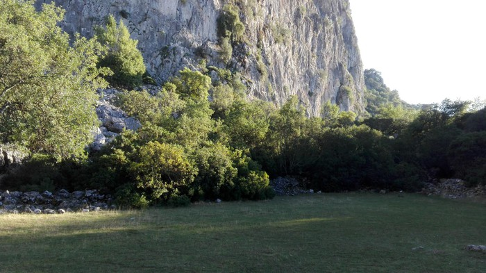
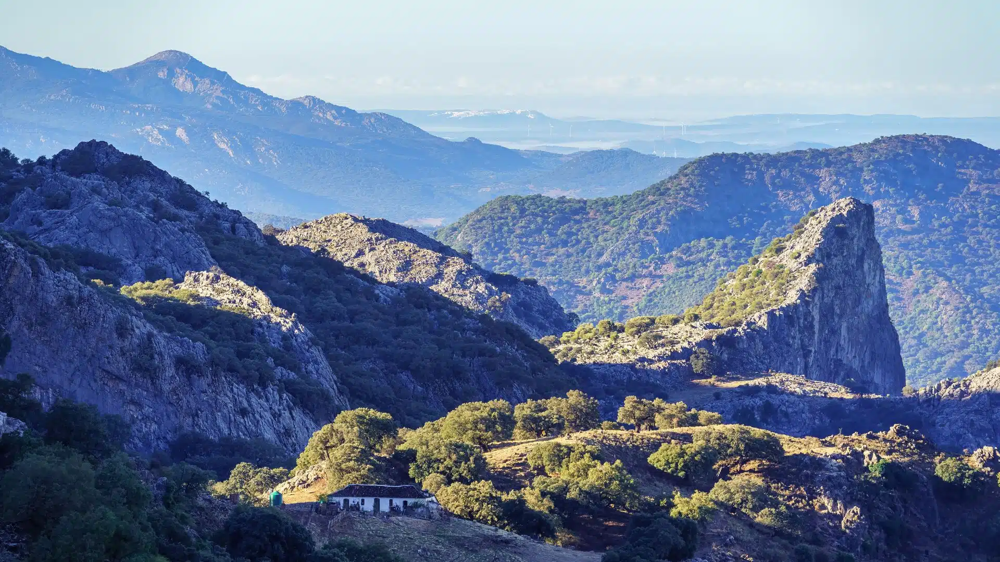

El Aljibe
Altura: 1.091 m
Dificultad: Moderada
Ubicado en el Parque Natural de los Alcornocales, El Aljibe ofrece vistas espectaculares y una ruta rodeada de vegetación exuberante.
Explora las montañas mas emblemáticas de la provincia
Altura: 1.091 m
Dificultad: Moderada
Ubicado en el Parque Natural de los Alcornocales, El Aljibe ofrece vistas espectaculares y una ruta rodeada de vegetación exuberante.
Altura: 1.648 m
Dificultad: Alta
El pico más alto de la provincia, situado en la Sierra del Pinar. Su ascenso es exigente pero muy gratificante.
Altura:1.396 m
Dificultad:Alta
La ascensión al pico desde el pueblo es una ruta de senderismo con caminos pedregosos y algunos tramos difíciles de seguir, pero que ofrece vistas espectaculares de la zona.